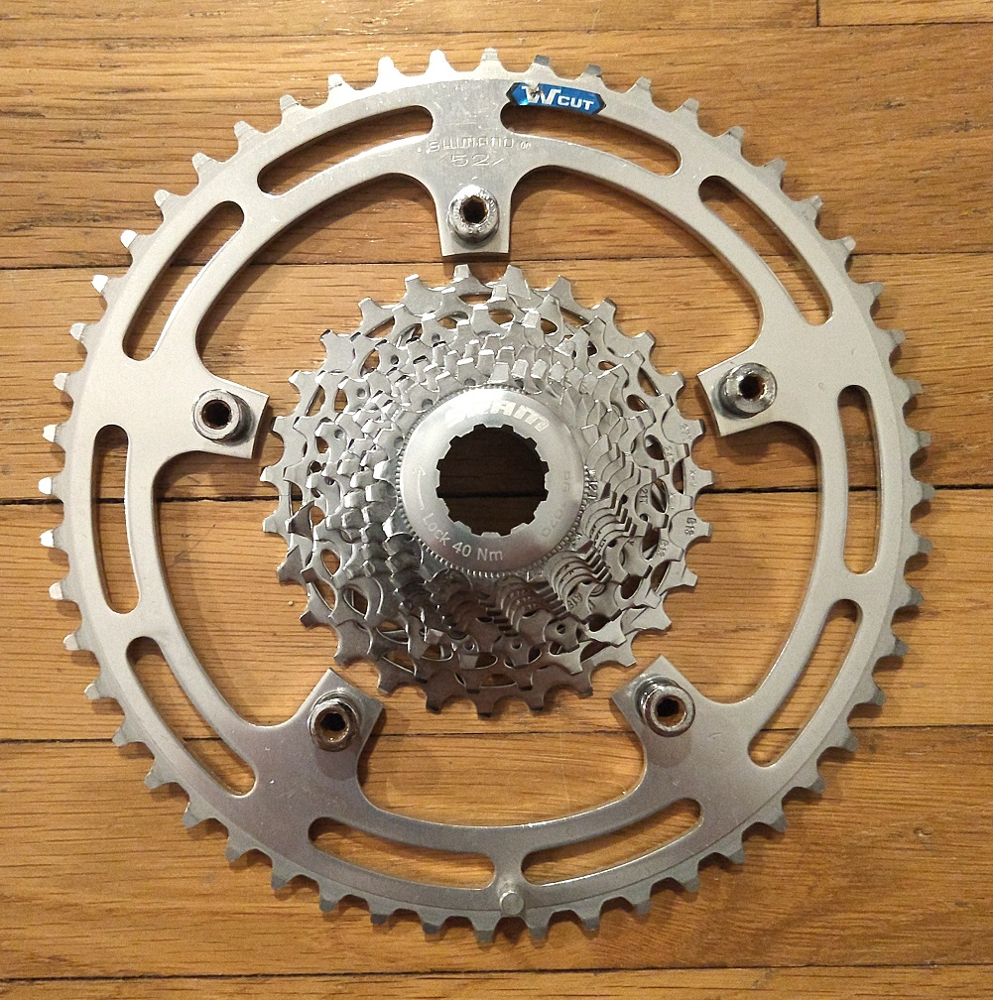

Bicycle Gear Inch Calculator

Gear inches is a unit of measurement which allows the comparision of the gearing ratios of a bicycle drivetrain. For example, a harder
to pedal gear will a higher gear inch value than an easier to push ratio. A ratio for climbing a mountain might be less than 30 gear inches where
as you may have a 90 or 100 gear inch for flat or downhill areas.
This page contains a form that takes input both from a drop down selection and numeric text input. A JavaScript program
is called which calculates the Gear Inch value of the given selections. The value is then displayed below the form.
Eventually, I'd like to be allow the user to give multiple gear ratio and create a graph of the gear inches and the jumps
between them.
This gear combination is: inches.
To the top